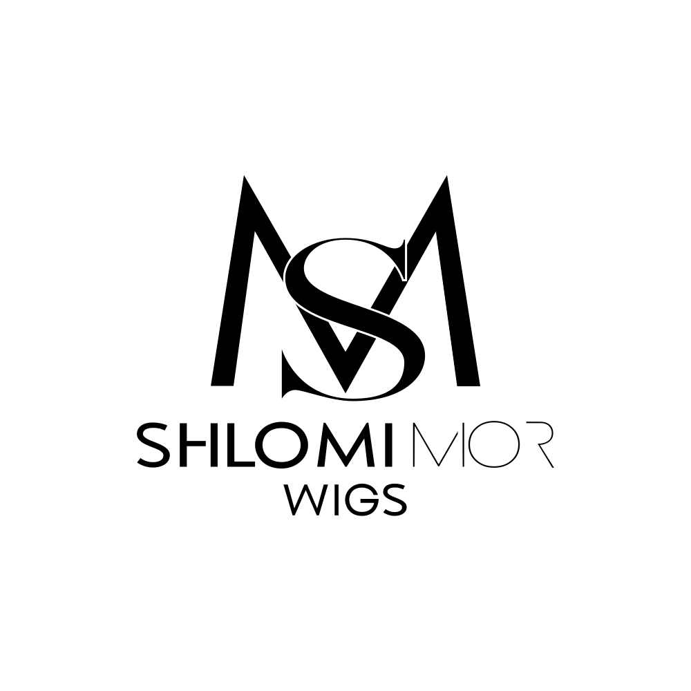

Mission
To return confidence. Every woman who comes to Shlomi Mor leaves with her dream hair back — for a season, a stage, or a lifetime.

Brand Guidelines · Maison de Coiffure, New York
Four chapters, paced like a long lunch — read in order.
To return confidence. Every woman who comes to Shlomi Mor leaves with her dream hair back — for a season, a stage, or a lifetime.
Made by hand, in New York. A house where medical solutions and quiet fashion sit on the same shelf, with equal care.
Presence over performance. Precision over decoration. Empathy over selling. The brand reads as it is.
The house carries three colors and no more. Black for weight, gold for the signature, white for breath. Used in this proportion: 70 / 5 / 25.
Display. Reserved for openers and the brand mark. Never under 28 px.
Functional. Everything that has to work. Body 15 px / 1.7; labels tracked +0.32 em.
Signature. One word per layout, maximum. Never under 36 px.
Big serif on top, small caps sans underneath, one script word as a quiet accent.